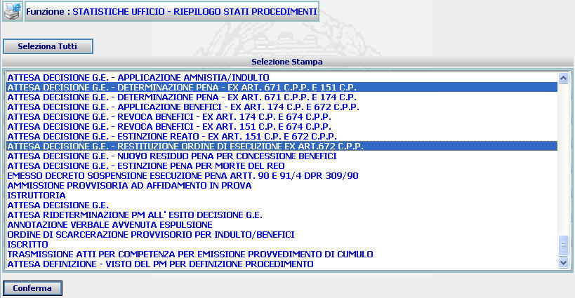
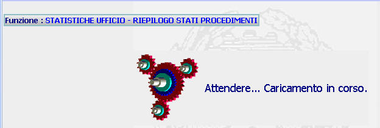
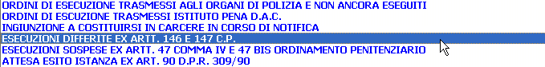
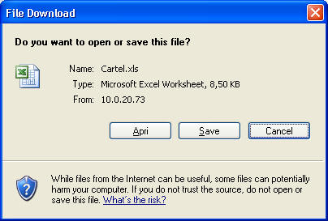
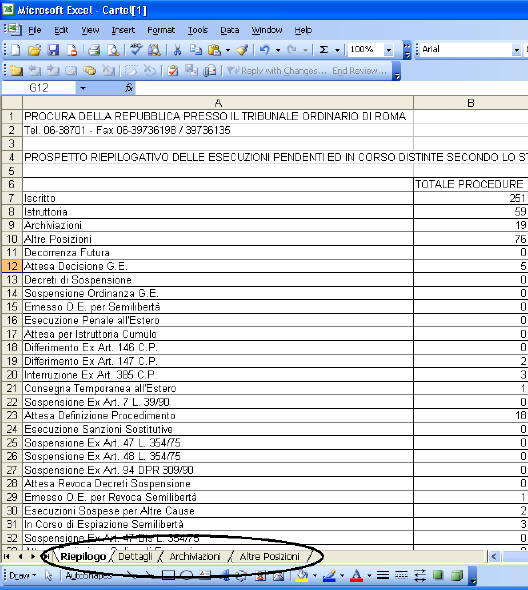

GENERALITA'
STATISTICHE UFFICIO - RIEPILOGO STATI PROCEDIMENTI : La funzione consente di eseguire, presso gli uffici, le estrazioni statistiche relativamente al riepilogo degli stati dei procedimenti.
LE MASCHERE VIDEO
La funzione in esame viene realizzata attraverso l'utilizzo delle seguente maschera che riporta gli elementi dell'estrazione voluta:

Prima dell'apertura della precedente maschera il sistema visualizza la seguente immagine:

COME FARE PER ...
Per effettuare una estrazione statistica relativamente al riepilogo degli stati dei procedimenti, l'utente deve:
| Nel caso che si vogliano selezionare tutti gli stati del procedimento occorre agire sul pulsante ; |
| Nel caso che si vogliano selezionare uno o più stati del procedimento occorre cliccare con il mouse in corrispondenza degli stati prescelti: |

Nel caso che si vogliano selezionare più righe contemporaneamente occorre, prima di cliccare con il mouse sull'ulteriore elemento, tenere premuto il tasto "Ctrl"
Agire sul pulsante
 per
creare un file Excel;
per
creare un file Excel;


CAMPI
I dati che consentono di effettuare l'estrazione statistica sono i seguenti:
| NOME | DESCRIZIONE |
| Selezione stampa | Selezionare dalla lista il valore o i valori prescelti. |
PULSANTI
Oltre ai
pulsanti orizzontali dell'area
di navigazione, è presente
il pulsante
 di stampa del contesto (videata)
di stampa del contesto (videata)
BOTTONI
Oltre ai comandi funzionali relativi al menù verticale sono presenti i seguenti comandi:
|
COMANDI |
DESCRIZIONE |
|
|
A fronte di tale comando, il sistema dopo aver verificato la validità dei dati specificati, presenta la maschera dell'apertura del file Excel contenente i dati che soddisfano la ricerca. |
|
|
A fronte di tale comando vengono selezionati tutte le voci relative alla selezione di stampa |
|
|
A fronte di tale comando, il sistema apre il documento creato in formato excel. |
CONTROLLI
A fronte della pressione
del bottone
 , il
sistema verifica che:
, il
sistema verifica che:
sia stata selezionata almeno una voce relativa agli stati del procedimento:
Il sistema potrebbe rilevare il seguente errore:
esista uno o più elementi rispondenti ai canali di ricerca selezionati.
Se il sistema non troverà alcun dato rispondente ai criteri di ricerca impostati verrà visualizzato il seguente messaggio:

Se il sistema non riscontrerà errori verrà visualizzata la maschera dell'apertura del file Excel contenente i dati che soddisfano la ricerca.